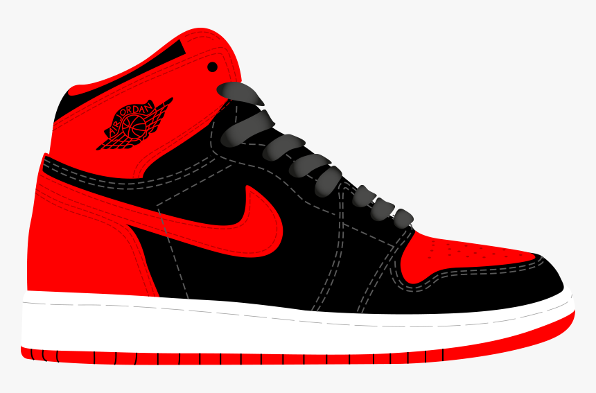
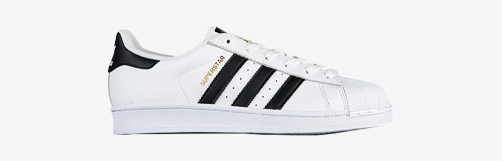
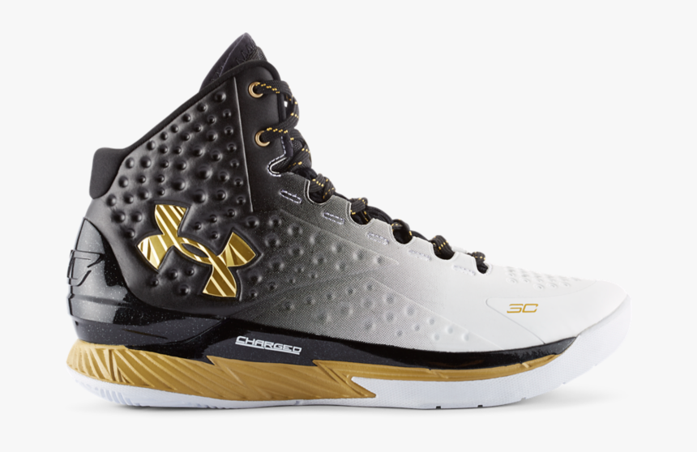

Sneakers
Jordan
As legend has it, the NBA actually banned the first iteration of Michael's Jordans, stating they violated the league's rule that a sneaker must be mostly white and reflect the colors of the team's jersey. Jordan was reportedly fined $5,000 for every game he wore the banned Air Jordan 1 sneakers, and Nike paid the fines, happy to capitalize on the publicity.But, when it comes to Air Jordans' popularity, the rest is history. The shoe became a must-have status symbol of the late '80s and '90s—and it's still a street style staple today. Jordans made sneakers part of pop culture.
Adidas
Adidas, in full Adidas AG, German manufacturer of athletic shoes and apparel and sporting goods. In the early 21st century it was the largest sportswear manufacturer in Europe and the second largest (after Nike) in the world. Adidas products are traditionally marked with a three-stripe trademark, which remains an element in the company newer “trefoil” and “mountain” logos. Headquarters are in Berlin,Germany. It was the beginning of a wonderful partnership, with adidas providing the official match ball for every FIFA World Cup that followed.
Under Armour
Under Armour, Inc. is an American sports equipment company that manufactures footwear, sports and casual apparel.Under Armour's global headquarters are located in Baltimore, Maryland, with additional offices located in Amsterdam (European headquarters), Austin, Guangzhou, Hong Kong, Houston, Jakarta, London, Mexico City, Munich, New York City, Panama City (international headquarters), Paris, Pittsburgh, Portland, San Francisco, Santiago, Seoul, Shanghai (Greater Chinese headquarters), and Toronto.Under Armour was founded on September 25, 1996 by Kevin Plank, a then 24-year-old former special teams captain of the University of Maryland football team. Plank initially began the business from his grandmother's basement in Washington, D.C. He spent his time traveling along the East Coast with nothing but apparel in the trunk of his car. His first team sale came at the end of 1996 with a $17,000 sale.